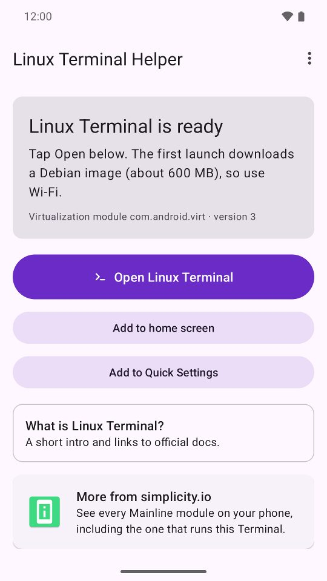
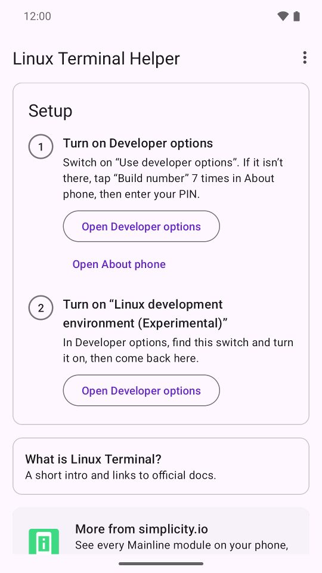
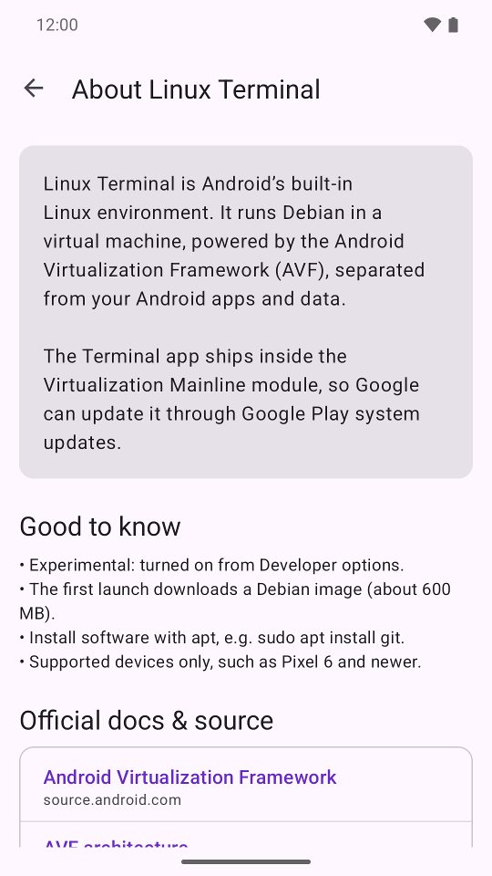

Linux Terminal Helper
ls /apex | grep virt
Some Android phones ship a Debian Linux environment, the Linux Terminal, switched off by default. Linux Terminal Helper checks whether your phone has it, walks you through turning it on, and opens it with one tap.

- Android 15+ (API 35)
- Needs Android's built-in Linux Terminal
- Free on Google Play
What it does
- Checks whether your phone includes Android's Linux Terminal and tells you what is missing.
- Guides you through the two setup steps: turn on Developer options, then switch on “Linux development environment (Experimental)”.
- Opens the Terminal with one tap, and adds a home-screen shortcut and a Quick Settings tile.
- A short “About Linux Terminal” page with links to the official Android docs and source code.
Screenshots



Questions
What is Android's Linux Terminal?
It is Android's built-in Linux environment. It runs Debian in a virtual machine, powered by the Android Virtualization Framework (AVF), separated from your Android apps and data. The Terminal app ships inside the Virtualization Mainline module, so Google can update it through Google Play system updates.
Which phones have it?
Google Pixel and other supported devices with Android 15 QPR2 or later. If your phone does not include it, Linux Terminal Helper tells you so instead of sending you through setup.
How do I turn it on?
Switch on Developer options (if they are missing, tap Build number 7 times in About phone and enter your PIN), then turn on “Linux development environment (Experimental)”. Linux Terminal Helper shows both steps and opens the right Settings screens.
What happens on first launch?
The first launch downloads a Debian image of about 600 MB, so use Wi-Fi. Afterwards you can install software with apt, for example sudo apt install git.
Is this an official Google app?
No. Linux Terminal Helper is an unofficial app, not affiliated with Google or Debian. The Linux Terminal itself is part of Android.
Get it
Free on Google Play. Android 15 or later, on a phone that includes the Linux Terminal.

Also from Simplicity.IO: Mainline Module Info, which lists every Mainline module on your phone, including the one that runs this Terminal.